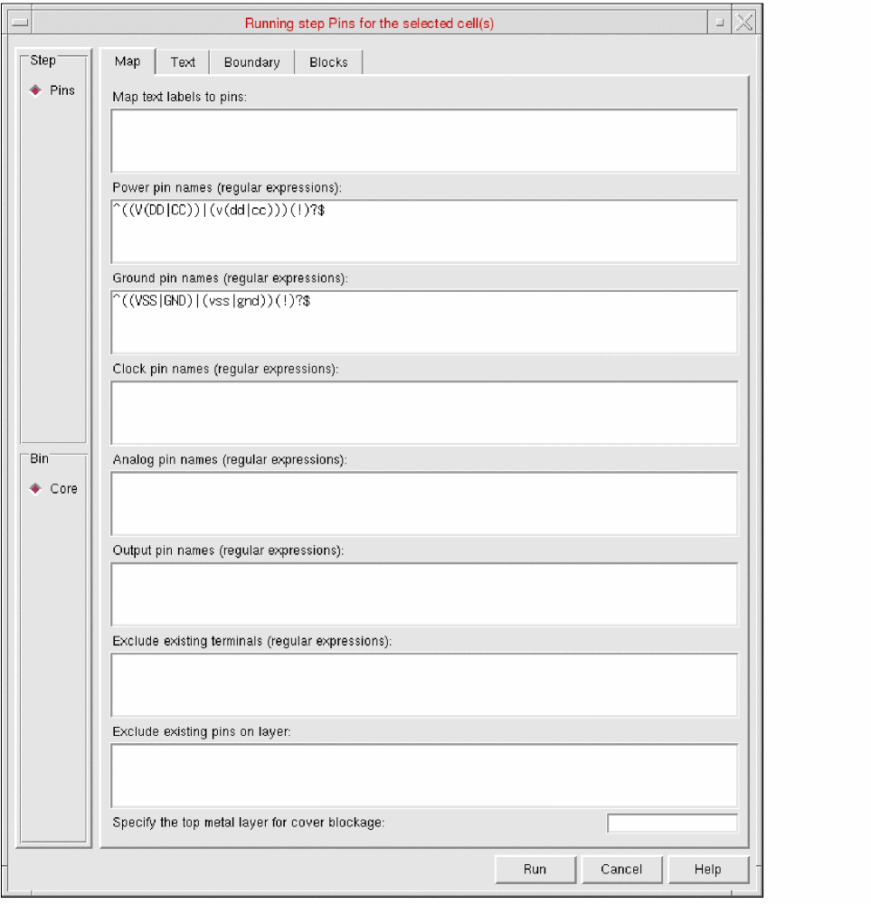
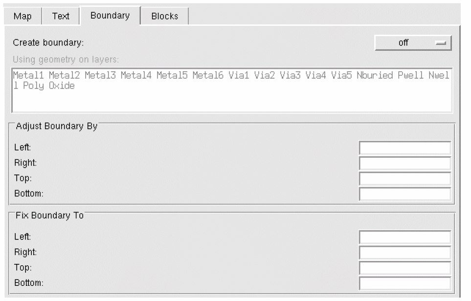

Setting PR Boundary Creation Options in Standalone Abstract Generation
To control the calculation of the place-and-route (PR) boundary in Running Step Pins form:
-
Select one or more cells in the main window and choose Flow – Pins, or click the Pins icon.
The Running step Pins form is displayed. -
Click the Boundary tab.
 -
In the Create boundary cyclic field, you can specify whether Abstract Generator is to create a PR boundary by choosing one of the values from always, as needed, and off.
Abstract Generator creates an OA PR boundary during the Pins step itself and propagates it during the Extract and Abstract step. - In the Using geometry on layers field, specify the layers to be used to calculate the PR boundary
- In the Adjust Boundary By field, you can increase or decrease the size of an existing or calculated PR boundary on one or more sides. To do this, specify the distance to be added to each boundary edge.
- In the Fix Boundary To field, you can fix individual cell boundary edges to an absolute value. These values are applied to existing and calculated PR boundaries.
-
Click Run.
The Percent Complete message box reports the progress of the step.
The PR boundary is created in the layout. The PR boundary shapes, which have the placementClass property set, are considered by Abstract Generator to be placement regions. The placementClass property indicates that instances with a matching placementClass can be placed in the same placement regions.
Abstract Generator ignores placement regions while determining whether a PR boundary exists. To enable Abstract Generator to correctly recognize a PR boundary, the instance must not have the placementClass property set.
Related Topics
Customizing Text Labels for Abstract Generation
Return to top